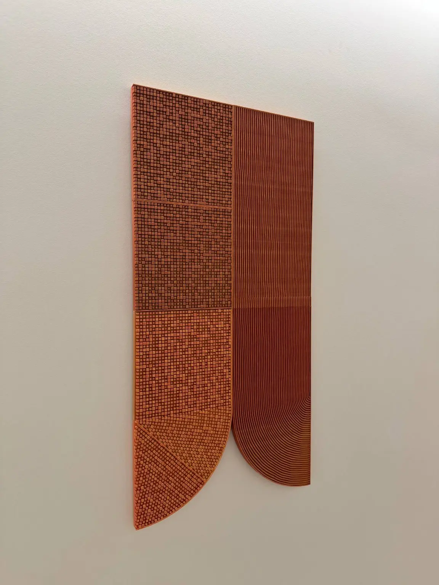

Исходные данные
Архитектурный контекст объекта и художественная задача для пространства.
 ТехнопаркДизайн и инжинирингОбсудить задачу
ТехнопаркДизайн и инжинирингОбсудить задачу Интерьерные арт-объекты
Разработать и изготовить настенные художественные объекты для общественных интерьеров дома на проспекте Академика Сахарова, 7.
Обсудить похожую задачу ↗
От замысла к результату
Архитектурный контекст объекта и художественная задача для пространства.
Рельефные композиции изготовлены и смонтированы в интерьере объекта. В галерее показаны готовый результат и этапы производства.
Материалы портфолио STEP_3D. Показан опыт команды в цифровом моделировании и изготовлении объектов.
Детали и этапы
Опишите назначение и ограничения. Вместе определим технологию и первый результат.
Обсудить с лабораторией ↗Все проекты →